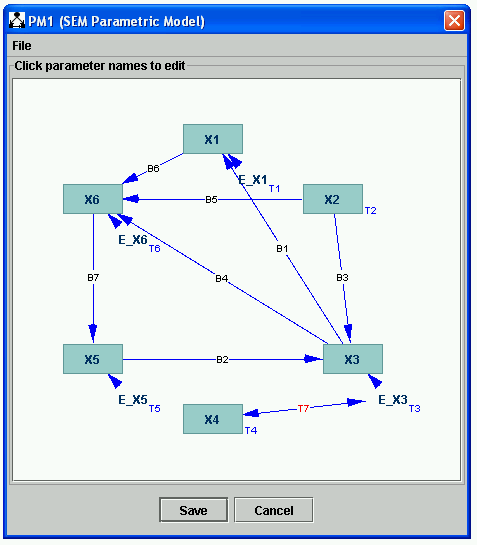
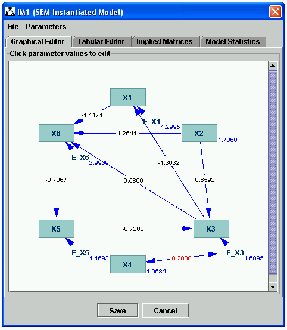
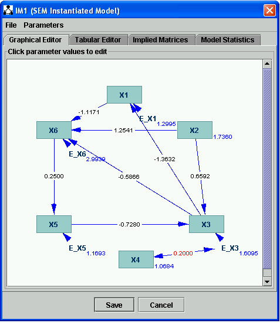
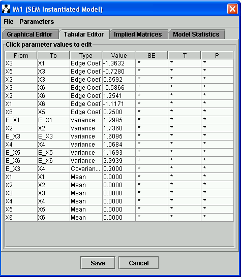

SEM Instantiated Model |
For a description of the sort of structural equation model (SEM) that is implemented in Tetrad, see SEM Parameterized Model. The parameters of the structural equation model are:
The purpose of the SEM IM is to allow values for these parameters to be specified. The SEM IM also implements the functions (such as the maximum likelihood function of the SEM) that are optimized by the SEM Estimator and calculates statistics for the SEM.
To construct a SEM IM, first construct a SEM Graph, then a SEM PM, as explained in SEM Parametric Model, and then add an IM box to the workspace, with arrows form the SEM PM to the IM:
For instance, you might end up with a SEM PM that looks like this.

When you double click the IM box now, you get a SEM IM model that's been filled in with randomly chosen values. (Notice you're not given a choice of models; this is because there is only one IM model in Tetrad that can serve as a child of a SEM PM model.)

Notice that in the SEM IM model, parameter values appear where parameter names appeared in the SEM PM. For instance, the linear coefficient for the edge X6-->X5 is labeled as "B7" in the SEM PM, but the actual real value for the parameter, "-0.7867," is shown in the SEM IM. These real values may be edited in two ways. The first way is to click on the numbers themselves. If you click on the "-0.7867," above, a small box appears to let you edit the value of this parameters.

You may, for instance, type ".25" and hit return; your new value for the parameter is recorded.

The other way to view and edit parameter values is using the Tabular Editor. If you click on the Tabular Editor tab, you get this display.

Notice that the parameter value for the edge coefficient of the edge X6-->X5 is "0.2500." We can edit this value again from this view by clicking on the box containing the value "0.2500" and changing it to, say, "-.5."

Whichever view we edit values in, the other view will reflect the updated values.
Notice that in the tabular view there are some columns to show statistics for each parameter. These columns are used by the SEM Estimator to show how robust the estimtation of each parameter is. These are ordinary statistics calculated for SEM estimations; SE standard for "standard error," T for "t statistic," and P for "p value."
If you click on the Implied Matrices tab, an implied matrix of some type that you choose will be displayed.

You may display either the implied covariance matrix of the model for all variables (shown), or the implied covariance matrix of the model for the measured variables only, or one of the corresponding implied correlation matrices.
If you click on the Model Statistics tab after having done a SEM estimation, you will be shown some goodness of fit statistics for the model as a whole. See SEM Estimator for more details.
A SEM IM may be made the child of the following modules:
A SEM IM may be made a parent of the following objects:
Notably, there is currenly no updater that takes as input a SEM IM, although there should be.